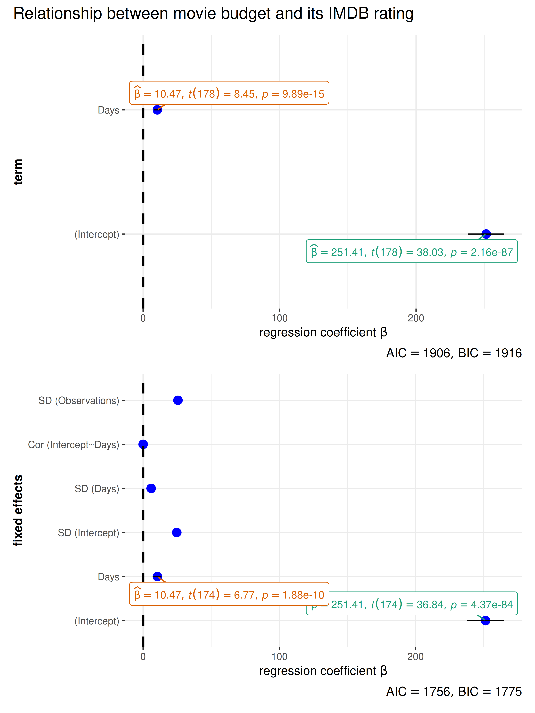
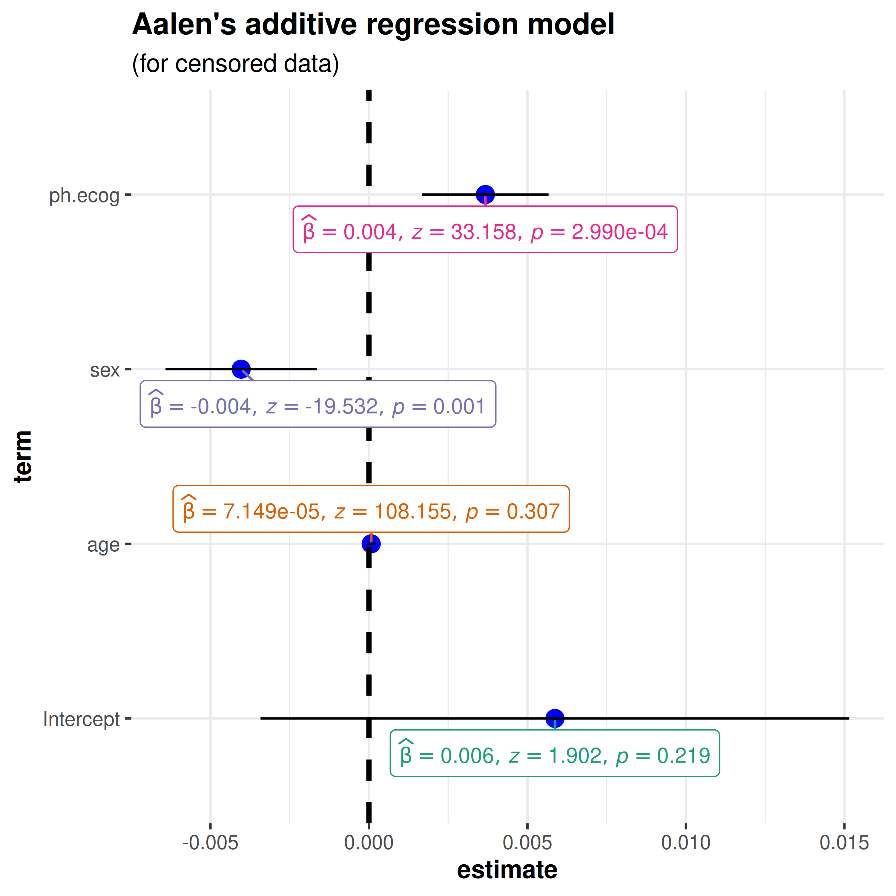
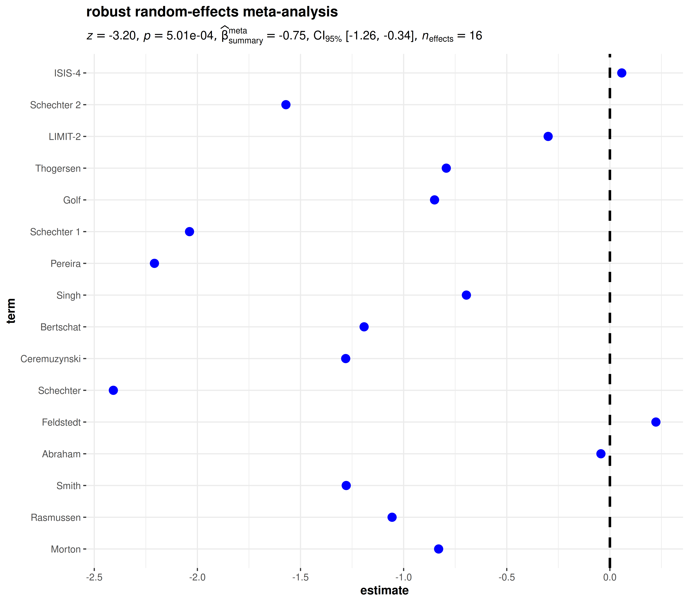
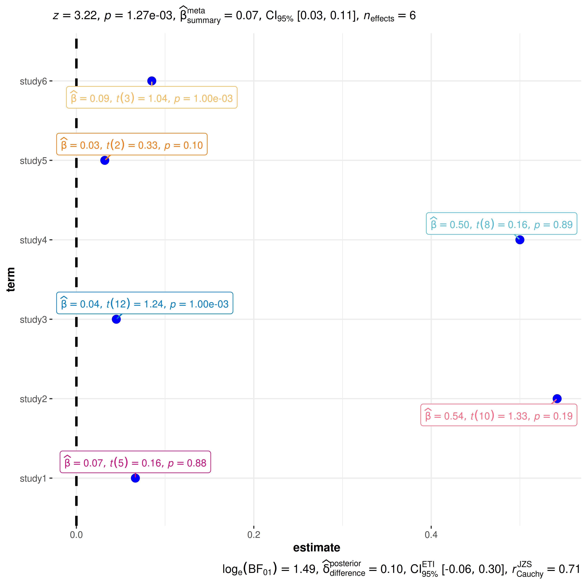

You can cite this package/vignette as:
To cite package 'ggstatsplot' in publications use:
Patil, I. (2021). Visualizations with statistical details: The
'ggstatsplot' approach. Journal of Open Source Software, 6(61), 3167,
doi:10.21105/joss.03167
A BibTeX entry for LaTeX users is
@Article{,
doi = {10.21105/joss.03167},
url = {https://doi.org/10.21105/joss.03167},
year = {2021},
publisher = {{The Open Journal}},
volume = {6},
number = {61},
pages = {3167},
author = {Indrajeet Patil},
title = {{Visualizations with statistical details: The {'ggstatsplot'} approach}},
journal = {{Journal of Open Source Software}},
}Lifecycle: 
The function ggcoefstats generates
dot-and-whisker plots for regression models saved in a
tidy data frame. The tidy data frames are prepared using
parameters::model_parameters. Additionally, if available,
the model summary indices are also extracted from
performance::model_performance.
In this vignette, we will see examples of how to use this function. We will try to cover as many classes of objects as possible. Unfortunately, there is no single dataset that will be helpful for carrying out all types of regression analyses and, therefore, we will use various datasets to explore data-specific hypotheses using regression models.
General structure of the plots
Although the statistical models displayed in the plot may differ based on the class of models being investigated, there are few aspects of the plot that will be invariant across models:
The dot-whisker plot contains a dot representing the estimate and their confidence intervals (
95%is the default). The estimate can either be effect sizes (for tests that depend on theF-statistic) or regression coefficients (for tests witht-, \(\chi^{2}\)-, andz-statistic), etc. The confidence intervals can sometimes be asymmetric if bootstrapping was used.The label attached to dot will provide more details from the statistical test carried out and it will typically contain estimate, statistic, and p-value.
The caption will contain diagnostic information, if available, about models that can be useful for model selection: The smaller the Akaike’s Information Criterion (AIC) and the Bayesian Information Criterion (BIC) values, the “better” the model is.
The output of this function will be a ggplot2 object and, thus, it can be further modified (e.g., change themes, etc.) with ggplot2 functions.
Supported models
Most of the regression models that are supported in the underlying
packages are also supported by ggcoefstats.
insight::supported_models()
#> [1] "aareg" "afex_aov"
#> [3] "AKP" "Anova.mlm"
#> [5] "anova.rms" "aov"
#> [7] "aovlist" "Arima"
#> [9] "averaging" "bamlss"
#> [11] "bamlss.frame" "bayesQR"
#> [13] "bayesx" "BBmm"
#> [15] "BBreg" "bcplm"
#> [17] "betamfx" "betaor"
#> [19] "betareg" "BFBayesFactor"
#> [21] "bfsl" "BGGM"
#> [23] "bife" "bifeAPEs"
#> [25] "bigglm" "biglm"
#> [27] "blavaan" "blrm"
#> [29] "bracl" "brglm"
#> [31] "brmsfit" "brmultinom"
#> [33] "btergm" "censReg"
#> [35] "cgam" "cgamm"
#> [37] "cglm" "clm"
#> [39] "clm2" "clmm"
#> [41] "clmm2" "clogit"
#> [43] "coeftest" "complmrob"
#> [45] "confusionMatrix" "coxme"
#> [47] "coxph" "coxph.penal"
#> [49] "coxr" "cpglm"
#> [51] "cpglmm" "crch"
#> [53] "crq" "crqs"
#> [55] "crr" "dep.effect"
#> [57] "DirichletRegModel" "draws"
#> [59] "drc" "eglm"
#> [61] "elm" "epi.2by2"
#> [63] "ergm" "feglm"
#> [65] "feis" "felm"
#> [67] "fitdistr" "fixest"
#> [69] "flexsurvreg" "gam"
#> [71] "Gam" "gamlss"
#> [73] "gamm" "gamm4"
#> [75] "garch" "gbm"
#> [77] "gee" "geeglm"
#> [79] "glht" "glimML"
#> [81] "glm" "Glm"
#> [83] "glmm" "glmmadmb"
#> [85] "glmmPQL" "glmmTMB"
#> [87] "glmrob" "glmRob"
#> [89] "glmx" "gls"
#> [91] "gmnl" "HLfit"
#> [93] "htest" "hurdle"
#> [95] "iv_robust" "ivFixed"
#> [97] "ivprobit" "ivreg"
#> [99] "lavaan" "lm"
#> [101] "lm_robust" "lme"
#> [103] "lmerMod" "lmerModLmerTest"
#> [105] "lmodel2" "lmrob"
#> [107] "lmRob" "logistf"
#> [109] "logitmfx" "logitor"
#> [111] "logitr" "LORgee"
#> [113] "lqm" "lqmm"
#> [115] "lrm" "manova"
#> [117] "MANOVA" "marginaleffects"
#> [119] "marginaleffects.summary" "margins"
#> [121] "maxLik" "mblogit"
#> [123] "mclogit" "mcmc"
#> [125] "mcmc.list" "MCMCglmm"
#> [127] "mcp1" "mcp12"
#> [129] "mcp2" "med1way"
#> [131] "mediate" "merMod"
#> [133] "merModList" "meta_bma"
#> [135] "meta_fixed" "meta_random"
#> [137] "metaplus" "mhurdle"
#> [139] "mipo" "mira"
#> [141] "mixed" "MixMod"
#> [143] "mixor" "mjoint"
#> [145] "mle" "mle2"
#> [147] "mlm" "mlogit"
#> [149] "mmclogit" "mmlogit"
#> [151] "model_fit" "multinom"
#> [153] "mvord" "negbinirr"
#> [155] "negbinmfx" "ols"
#> [157] "onesampb" "orm"
#> [159] "pgmm" "plm"
#> [161] "PMCMR" "poissonirr"
#> [163] "poissonmfx" "polr"
#> [165] "probitmfx" "psm"
#> [167] "Rchoice" "ridgelm"
#> [169] "riskRegression" "rjags"
#> [171] "rlm" "rlmerMod"
#> [173] "RM" "rma"
#> [175] "rma.uni" "robmixglm"
#> [177] "robtab" "rq"
#> [179] "rqs" "rqss"
#> [181] "rvar" "Sarlm"
#> [183] "scam" "selection"
#> [185] "sem" "SemiParBIV"
#> [187] "semLm" "semLme"
#> [189] "slm" "speedglm"
#> [191] "speedlm" "stanfit"
#> [193] "stanmvreg" "stanreg"
#> [195] "summary.lm" "survfit"
#> [197] "survreg" "svy_vglm"
#> [199] "svychisq" "svyglm"
#> [201] "svyolr" "t1way"
#> [203] "tobit" "trimcibt"
#> [205] "truncreg" "vgam"
#> [207] "vglm" "wbgee"
#> [209] "wblm" "wbm"
#> [211] "wmcpAKP" "yuen"
#> [213] "yuend" "zcpglm"
#> [215] "zeroinfl" "zerotrunc"Summary of graphics
| graphical element |
geom_ used |
argument for further modification |
|---|---|---|
| regression estimate | ggplot2::geom_point |
point.args |
| error bars | ggplot2::geom_errorbarh |
errorbar.args |
| vertical line | ggplot2::geom_vline |
vline.args |
| label with statistical details | ggrepel::geom_label_repel |
stats.label.args |
Summary of meta-analysis tests
Hypothesis testing and Effect size estimation
| Type | Test | Effect size | CI? | Function used |
|---|---|---|---|---|
| Parametric | Meta-analysis via random-effects models | \(\beta\) | ✅ | metafor::metafor |
| Robust | Meta-analysis via robust random-effects models | \(\beta\) | ✅ | metaplus::metaplus |
| Bayes | Meta-analysis via Bayesian random-effects models | \(\beta\) | ✅ | metaBMA::meta_random |
Examples of supported models
The following examples are organized by statistics type.
There used to be a much longer vignette with examples of a wide collection of regression models, but for the sake of maintainability, I have removed it. The old version can be found here.
t-statistic
linear model (lm) and linear mixed-effects model
(lmer/lmerMod)
# set up
library(lme4)
library(ggstatsplot)
set.seed(123)
# lm model
mod1 <- stats::lm(formula = scale(rating) ~ scale(budget), data = movies_long)
# merMod model
mod2 <- lme4::lmer(
formula = scale(rating) ~ scale(budget) + (budget | genre),
data = movies_long,
control = lme4::lmerControl(calc.derivs = FALSE)
)
# combining the two different plots
combine_plots(
plotlist = list(
ggcoefstats(mod1) +
ggplot2::labs(x = parse(text = "'standardized regression coefficient' ~italic(beta)")),
ggcoefstats(mod2) +
ggplot2::labs(
x = parse(text = "'standardized regression coefficient' ~italic(beta)"),
y = "fixed effects"
)
),
plotgrid.args = list(nrow = 2),
annotation.args = list(title = "Relationship between movie budget and its IMDB rating")
)
Note that for mixed-effects models, only the fixed effects
are shown because there are no confidence intervals for random
effects terms. In case, you would like to see these terms, you can enter
the same object you entered as x argument to
parameters::model_parameters:
# setup
set.seed(123)
library(lme4)
library(parameters)
# tidy output
parameters::model_parameters(
lme4::lmer(
formula = scale(rating) ~ scale(budget) + (budget | genre),
data = movies_long,
control = lme4::lmerControl(calc.derivs = FALSE)
)
)
#> # Fixed Effects
#>
#> Parameter | Coefficient | SE | 95% CI | t(1573) | p
#> ------------------------------------------------------------------
#> (Intercept) | -0.06 | 0.14 | [-0.33, 0.20] | -0.46 | 0.649
#> budget | 0.10 | 0.04 | [ 0.02, 0.19] | 2.50 | 0.013
#>
#> # Random Effects
#>
#> Parameter | Coefficient
#> -------------------------------------------
#> SD (Intercept: genre) | 0.43
#> SD (budget: genre) | 3.03e-03
#> Cor (Intercept~budget: genre) | -0.49
#> SD (Residual) | 0.92z-statistic
Aalen’s additive regression model for censored data
(aareg)
# setup
library(survival)
set.seed(123)
# model
afit <- survival::aareg(
formula = Surv(time, status) ~ age + sex + ph.ecog,
data = lung,
dfbeta = TRUE
)
# plot
ggcoefstats(
x = afit,
title = "Aalen's additive regression model",
subtitle = "(for censored data)",
k = 3
)
\(\chi^2\)-statistic
Cox proportional hazards regression model (coxph)
# for reproducibility
set.seed(123)
library(survival)
# create the simplest-test data set
test1 <- list(
time = c(4, 3, 1, 1, 2, 2, 3),
status = c(1, 1, 1, 0, 1, 1, 0),
x = c(0, 2, 1, 1, 1, 0, 0),
sex = c(0, 0, 0, 0, 1, 1, 1)
)
# fit a stratified model
mod_coxph <-
survival::coxph(
formula = Surv(time, status) ~ x + strata(sex),
data = test1
)
# plot
ggcoefstats(
x = mod_coxph,
title = "Cox proportional hazards regression model"
)
Another example with frailty term.
# setup
set.seed(123)
library(survival)
# model
mod_coxph <- survival::coxph(
formula = Surv(time, status) ~ age + sex + frailty(inst),
data = lung
)
# plot
ggcoefstats(
x = mod_coxph,
title = "Proportional Hazards Regression Model\nwith Frailty penalty function"
)
F-statistic
omnibus ANOVA (aov)
# setup
set.seed(123)
library(ggstatsplot)
library(ggplot2)
# model
mod_aov <- stats::aov(formula = rating ~ mpaa * genre, data = movies_long)
# plot
ggcoefstats(
x = mod_aov,
effectsize.type = "omega", # changing the effect size estimate being displayed
point.args = list(color = "red", size = 4, shape = 15), # changing the point geom
package = "dutchmasters", # package from which color palette is to be taken
palette = "milkmaid", # color palette for labels
title = "omnibus ANOVA", # title for the plot
exclude.intercept = TRUE
) +
# further modification with the ggplot2 commands
# note the order in which the labels are entered
ggplot2::scale_y_discrete(labels = c("MPAA", "Genre", "Interaction term")) +
ggplot2::labs(x = "effect size estimate (eta-squared)", y = NULL)Note that we can also use this function for model selection. You can try out different models with the code below and see how the AIC and BIC values change.
# setup
set.seed(123)
library(ggstatsplot)
# plot
combine_plots(
plotlist = list(
# model 1
ggcoefstats(
x = stats::aov(formula = rating ~ mpaa, data = movies_long),
title = "1. Only MPAA ratings"
),
# model 2
ggcoefstats(
x = stats::aov(formula = rating ~ genre, data = movies_long),
title = "2. Only genre"
),
# model 3
ggcoefstats(
x = stats::aov(formula = rating ~ mpaa + genre, data = movies_long),
title = "3. Additive effect of MPAA and genre"
),
# model 4
ggcoefstats(
x = stats::aov(formula = rating ~ mpaa * genre, data = movies_long),
title = "4. Multiplicative effect of MPAA and genre"
)
),
annotation.args = list(title = "Model selection using ggcoefstats")
)
Another example with multivariate analysis of variance
(manova):
# setup
set.seed(123)
# fake a 2nd response variable
npk2 <- within(npk, foo <- rnorm(24))
# model
m_manova <- manova(cbind(yield, foo) ~ block + N * P * K, npk2)
# plot
ggcoefstats(
x = m_manova,
title = "multivariate analysis of variance"
)
Bayesian models - no statistic
# setup
set.seed(123)
library(BayesFactor)
library(ggstatsplot)
# one sample t-test
mod1 <- ttestBF(mtcars$wt, mu = 3)
# independent t-test
mod2 <- ttestBF(formula = wt ~ am, data = mtcars)
# paired t-test
mod3 <- ttestBF(x = sleep$extra[1:10], y = sleep$extra[11:20], paired = TRUE)
# correlation
mod4 <- correlationBF(y = iris$Sepal.Length, x = iris$Sepal.Width)
# contingency tabs (not supported)
data("raceDolls")
mod5 <- contingencyTableBF(
raceDolls,
sampleType = "indepMulti",
fixedMargin = "cols"
)
# anova
data("puzzles")
mod6 <- anovaBF(
formula = RT ~ shape * color + ID,
data = puzzles,
whichRandom = "ID",
whichModels = "top",
progress = FALSE
)
# regression-1
mod7 <- regressionBF(rating ~ ., data = attitude, progress = FALSE)
# meta-analysis
t <- c(-.15, 2.39, 2.42, 2.43, -.15, 2.39, 2.42, 2.43)
N <- c(100, 150, 97, 99, 99, 97, 100, 150)
mod8 <- meta.ttestBF(t, N, rscale = 1, nullInterval = c(0, Inf))
# proportion test
mod9 <- proportionBF(y = 15, N = 25, p = .5)
# list of plots
combine_plots(
plotlist = list(
ggcoefstats(mod1, title = "one sample t-test"),
ggcoefstats(mod2, title = "independent t-test"),
ggcoefstats(mod3, title = "paired t-test"),
ggcoefstats(mod4, title = "correlation"),
ggcoefstats(mod5, title = "contingency table", effectsize.type = "cramers_v"),
ggcoefstats(mod6, title = "anova"),
ggcoefstats(mod7, title = "regression-1"),
ggcoefstats(mod8, title = "meta-analysis"),
ggcoefstats(mod9, title = "proportion test")
),
annotation.args = list(title = "Example from `BayesFactor` package")
)
Regression models with list outputs
Note that a number of regression models will return an object of
class list, in which case this function will fail. But
often you can extract the object of interest from this list and use it
to plot the regression coefficients.
# setup
library(gamm4)
set.seed(123)
# data
dat <- gamSim(1, n = 400, scale = 2)
# now add 20 level random effect `fac'...
dat$fac <- fac <- as.factor(sample(1:20, 400, replace = TRUE))
dat$y <- dat$y + model.matrix(~ fac - 1) %*% rnorm(20) * .5
# model object
br <- gamm4::gamm4(
formula = y ~ s(x0) + x1 + s(x2),
data = dat,
random = ~ (1 | fac)
)
# looking at the classes of the objects contained in the list
purrr::map(br, class)
# plotting
combine_plots(
plotlist = list(
# first object plot (only parametric terms are shown)
ggcoefstats(
x = br$gam,
title = "generalized additive model (parametric terms)",
k = 3
),
# second object plot
ggcoefstats(
x = br$mer,
title = "linear mixed-effects model",
k = 3
)
),
plotgrid.args = list(nrow = 1)
)Meta-analysis
In case the estimates you are displaying come from multiple studies, you can also use this function to carry out random-effects meta-analysis. The data frame you enter must contain at the minimum the following three columns-
term: a column with names/identifiers to annotate each study/effectestimate: a column with the observed effect sizes or outcomesstd.error: a column the corresponding standard errors
parametric
# setup
set.seed(123)
library(metaplus)
# renaming to what the function expects
df <- dplyr::rename(mag, estimate = yi, std.error = sei, term = study)
# plot
ggcoefstats(
x = df,
meta.analytic.effect = TRUE,
bf.message = TRUE,
meta.type = "parametric",
title = "parametric random-effects meta-analysis"
)
robust
# setup
set.seed(123)
library(metaplus)
# renaming to what the function expects
df <- dplyr::rename(mag, estimate = yi, std.error = sei, term = study)
# plot
ggcoefstats(
x = df,
meta.analytic.effect = TRUE,
meta.type = "robust",
title = "robust random-effects meta-analysis"
)
Bayesian
# setup
set.seed(123)
library(metaplus)
# renaming to what the function expects
df <- dplyr::rename(mag, estimate = yi, std.error = sei, term = study)
# plot
ggcoefstats(
x = df,
meta.analytic.effect = TRUE,
meta.type = "bayes",
title = "Bayesian random-effects meta-analysis"
)
Data frames
Sometimes you don’t have a model object but a custom data frame that
you want display using this function. If a data frame is to be plotted,
it must contain columns named term (names
of predictors), and estimate (corresponding estimates of
coefficients or other quantities of interest). Other optional columns
are conf.low and conf.high (for confidence
intervals), and p.value. You will also have to specify the
type of statistic relevant for regression models ("t",
"z", "f", "chi") in case you want
to display statistical labels.
You can also provide a data frame containing all the other relevant information for additionally displaying labels with statistical information.
# let's make up a data frame (with all available details)
df_full <-
tibble::tribble(
~term, ~statistic, ~estimate, ~std.error, ~p.value, ~df.error,
"study1", 0.158, 0.0665, 0.778, 0.875, 5L,
"study2", 1.33, 0.542, 0.280, 0.191, 10L,
"study3", 1.24, 0.045, 0.030, 0.001, 12L,
"study4", 0.156, 0.500, 0.708, 0.885, 8L,
"study5", 0.33, 0.032, 0.280, 0.101, 2L,
"study6", 1.04, 0.085, 0.030, 0.001, 3L
)
# plot
ggcoefstats(
x = df_full,
meta.analytic.effect = TRUE,
statistic = "t",
package = "LaCroixColoR",
palette = "paired"
)
Non-plot outputs
This function can also be used to extract outputs other than a plot,
although it is much more preferable to use the underlying functions
instead (parameters::model_parameters).
# setup
set.seed(123)
library(ggstatsplot)
# data
DNase1 <- subset(DNase, Run == 1)
# using a selfStart model
nlmod <- stats::nls(density ~ SSlogis(log(conc), Asym, xmid, scal), DNase1)
# data frames
ggcoefstats(nlmod) %>% extract_stats()
#> $subtitle_data
#> NULL
#>
#> $caption_data
#> NULL
#>
#> $pairwise_comparisons_data
#> NULL
#>
#> $descriptive_data
#> NULL
#>
#> $one_sample_data
#> NULL
#>
#> $tidy_data
#> # A tibble: 3 × 11
#> term estimate std.error conf.level conf.low conf.high statistic df.error
#> <fct> <dbl> <dbl> <dbl> <dbl> <dbl> <dbl> <int>
#> 1 Asym 2.35 0.0782 0.95 2.18 2.51 30.0 13
#> 2 xmid 1.48 0.0814 0.95 1.31 1.66 18.2 13
#> 3 scal 1.04 0.0323 0.95 0.972 1.11 32.3 13
#> p.value conf.method expression
#> <dbl> <chr> <list>
#> 1 2.17e-13 Wald <language>
#> 2 1.22e-10 Wald <language>
#> 3 8.51e-14 Wald <language>
#>
#> $glance_data
#> # A tibble: 0 × 0Not supported
This vignette was supposed to give a comprehensive account of
regression models supported by ggcoefstats. The list of
supported models will keep expanding as additional tidiers are added to
the parameters and performance packages.
Note that not all models supported in these packages
will be supported by ggcoefstats. In particular, classes of
objects for which there is no column for estimate (e.g.,
kmeans, optim, muhaz,
survdiff, zoo, etc.) are not supported.
Suggestions
If you find any bugs or have any suggestions/remarks, please file an
issue on GitHub: https://github.com/IndrajeetPatil/ggstatsplot/issues